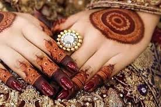
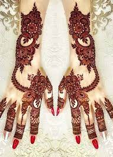

Mehndi
Design

| HOME | ABOUT US | CONTACT US | PHOTO GALLERY |
|---|
ABOUT US
|
Mehndi is a form of temporary body art originating from India, in which decorative designs are created on the skin using a paste made from the powdered leaves of the henna plant. The paste is applied to the skin using a cone or brush and left to dry, leaving a reddish-brown stain that lasts for several days to weeks. Mehndi is a popular form of body art in South Asian, Middle Eastern, and African cultures, and is often used for special occasions such as weddings, religious festivals, and cultural celebrations. Here are some important factors to consider when it comes to Mehndi: Henna Quality: The quality of henna used is important as it affects the intensity and duration of the stain. High-quality henna is made from the leaves of the henna plant and has a greenish-brown color, while lower-quality henna may contain chemicals that can lead to skin irritation. Design: The design you choose for your Mehndi can vary in size and intricacy, from simple dots and lines to elaborate and detailed patterns. Application Method: Mehndi can be applied using a cone, brush, or stencil, and the method chosen can impact the final result. Drying Time: The drying time of the henna paste is important as it affects the final outcome of the design. Aftercare: Proper aftercare, such as avoiding water and moisturizing the skin, can help prolong the lifespan of the Mehndi stain. Allergies: Some people may have an allergic reaction to henna, so it is important to do a patch test before applying Mehndi to a large area of skin. Cultural Significance: Mehndi has cultural and religious significance in some communities, and is often used to mark special occasions such as weddings, religious festivals, and cultural celebrations. |
 |